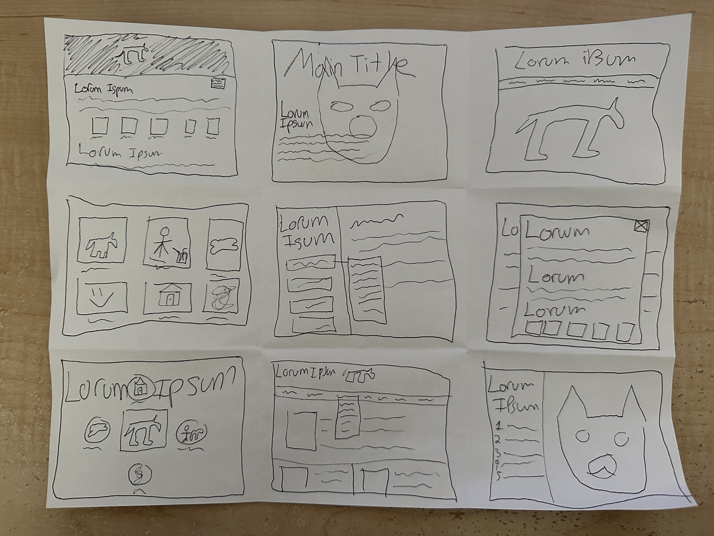
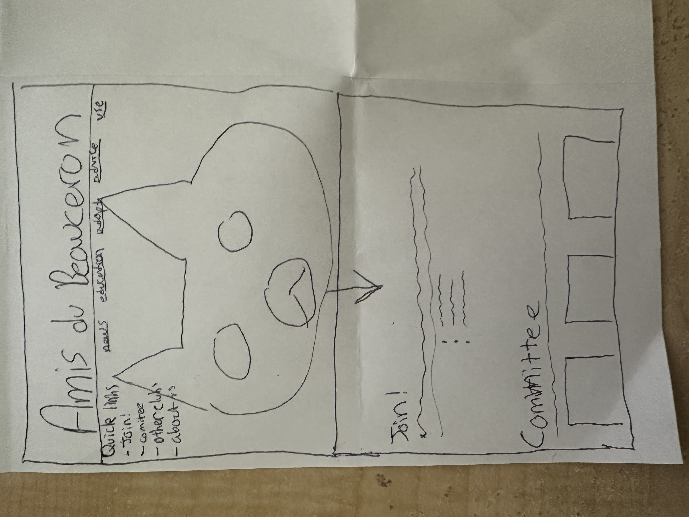
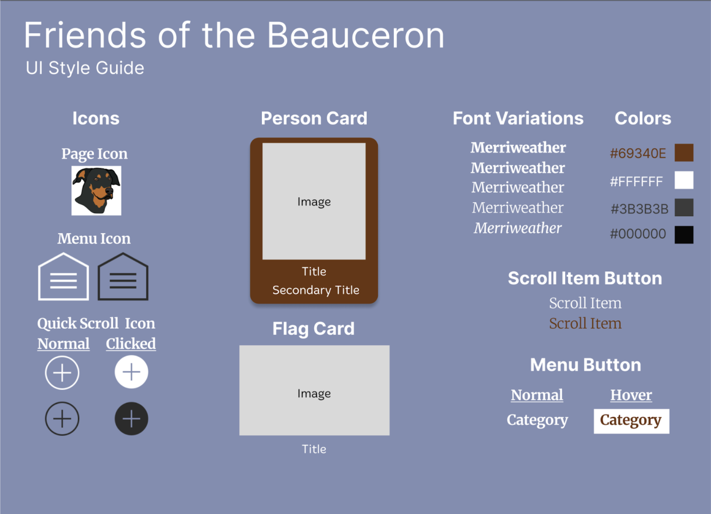
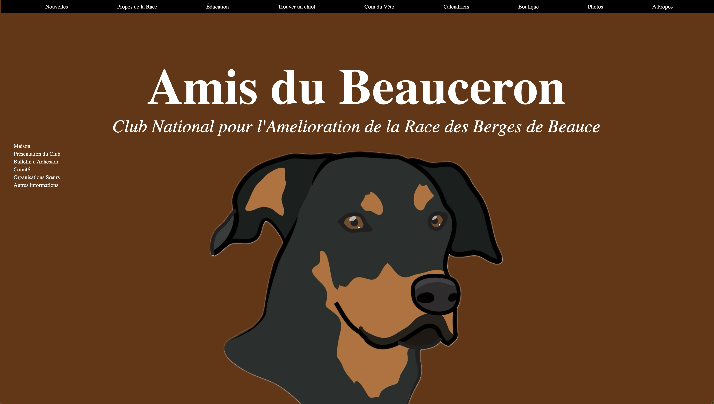

To improve the user experience, I began my redesign by taking nine minutes to create nine different sketches (using one minute per sketch) so that I could come up with a wide variety of ideas. This was crucial as it forced me to come up with new ideas every step of the process.
Responsive Redesign
Introduction
The goal for this project was to identify a webpage that was deficient in usability and accessibility standards so that I could improve upon it. After browsing the internet, I found this page and knew that I had to do it as I adore dogs. Click on the image below in order to view the webpage for the French National Club for the Beauceron breed. This website is dedicated to the Beauceron dog breed as it provides not only insightful information about the breed and where you can adopt them, but also shares how the club hosts competitions and exhibitions as well. I chose this website because of how the text is cluttered with little to no structure and because of how busy it is with its color choices and repeating background images.

Problem Context
The National Club's webpage presents significant challenges that are hurdles for a user to have a good experience with the webpage. This can be attributed to the page's learnability, memorability, and efficiency. New users are likely to find the layout overwhelming because it has multiple columns and sections along with a high density of text and images that lack a clear visual hierarchy and consistent formatting. This makes it difficult for them to quickly discern important information. Casual users may also struggle with the page's memorability as the non-intuitive design requires a user to relearn the interface upon each visit. This can be seen through the absence of logically arranged links and text, which makes it hard to recall the location of specific information. Moreover, the efficiency of the site is compromised by the use of various text colors to differentiate links, section titles, and dividers, with some overlap in color usage. This, combined with an abundance of links and lists, forces even experienced users to tediously navigate through the content for what should be straightforward tasks.
Accessibility Issues
After using WebAim Wave, there were several problems that I noticed. First, there was no heading structure which is a problem because people who need assistance when navigating websites will have a challenging time trying to find the section they are looking for. The next issue is that none of the images on the page had alternative text which is also a problem because the alternative text enables screen readers to read the information about the images for someone who is visually impaired. The last major problem that was shown was the contrast errors for the colored text. Because the page used red text as a way of showing important information, people who can't perceive it correctly will see it as black and so they wouldn't be able to see it as intended.
Low Fidelity

Once I was finished with the sketches, I created a final sketch that incorporated my favorite ideas from the previous exercise which would serve as the groundwork for my redesign.

Laptop Wireframe
With the wireframe mockup, I wanted to address some of the shortcomings of the original webpage. This can first be seen with the menu bar at the top which would remove a lot of the clutter that was present in the original page where the left column had too many links present. The next key feature is the quick scroll menu that would allow a user to automatically be taken to their desired part of the page just by looking at the headers of the website which would increase efficiency. Another improvement that I wanted to implement was a very clear hierarchy to the page by taking advantage of white space and header text as a way of separating each section.
Tablet Wireframe
In order to be accessible to other types of devices, I originally planned on implementing a button that would hide the quick scroll menu to save screen space for smaller devices. I also wanted to reduce the amount of stacking when the screen size decreased so I thought about having the menu bar become a scrollable item.
Phone Wireframe
As the screen size reduces, the content on the page would resize as well. I decided to address the single large image containing all of the committee members by separating each member into their own card so that they would be more visually pleasing.
High Fidelity
Style Guide
Below is the style guide that I used for my high fidelity mockup which made it very simple to reuse certain items that were used consistently. The guide was particularly important as I wanted to pick the right colors and styles that would be able to address the accessibility problems that the original page had faced. As a result, I made sure that the font would be easy to read and the colors used had enough contrast to pass the WCAG AA and AAA tests.
Laptop Mockup
Here is my high fidelity mockup for a laptop screen. The first of the notable changes from the low fidelity version was that I included a subtitle in the main section which was important so that people knew the purpose of the page. Next, I took the president from the grid of committee members and placed them on their own as a way of increasing clarity. Last, I moved the sister organizations from the column with all of the links into the body in a card format since the original long list with the moving graphics created extra clutter.
Tablet Mockup
Moving on to the tablet format, a significant change that I made was to include menu and quick scroll icons that took the place of the menu bar and quick scroll links respectively when the screen size became too small. This made the content of the page easier to read and if the home icon was tapped, the menu would slide in from the left making it quickly accessible. Likewise, if the quick scroll icon was tapped, the links would appear above the icon. The other major change I made to make the page more accessible to different screens was to make the cards and flags become side scrollable items to increase efficiency. This was important as it prevented users from having to vertically scroll through the numerous cards.
Phone Mockup
On the phone mockup, the sliding menu item can be seen along with the cards, flags, and body resizing for the smaller form factor.
Final Product
Below is my final redesign! The deployed website can be accessed by clicking on the image below. The notable change from the high fidelity mockup is that I removed the quickscroll menu when using a mobile device such as a phone or tablet. I made this decision because when I was testing the page on my phone, I found that the screen was too cluttered. Accessibility-wise, I made some slight variations to further improve my webpage. The first of which was to change the menu bar so that the background was black to make it easier to read the items. The next change I made was to use clickable buttons instead of hyperlinks in the main body of the page. The last of the accessibility modifications was to add external ink icons to the flags and cards which would let a user know that they are clickable.
Key Takeaways
- Don't be too attached to your design. While I was implementing my webpage, there were design elements that I thought would be good but ended up not being practical for the goals that I was trying to achieve and so I learned that the design process is constantly happening and that I must adapt as issues come along.
- Replicating the design system to redesign a webpage from scratch is a fun challenge! While I have worked on html projects in the past, I never had to go through the design process which was great as I learned how to leverage applications like Figma and use more complicated CSS techniques.